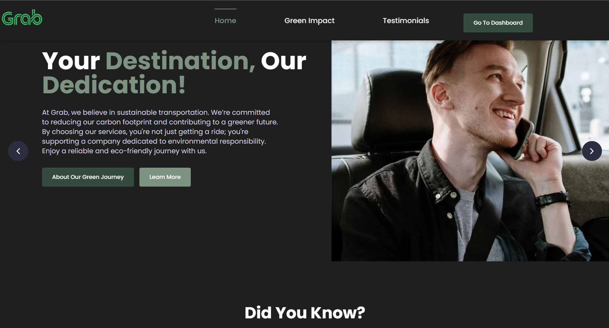
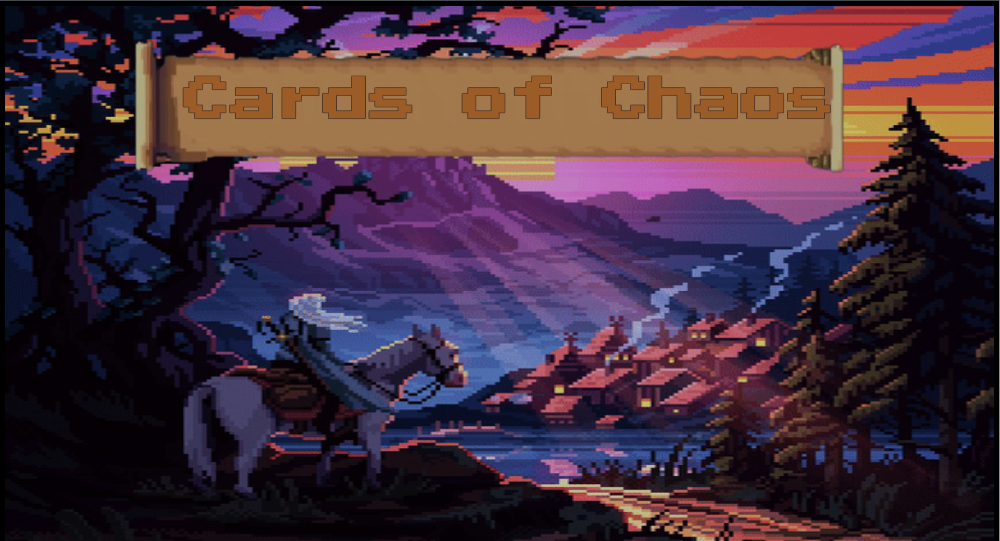
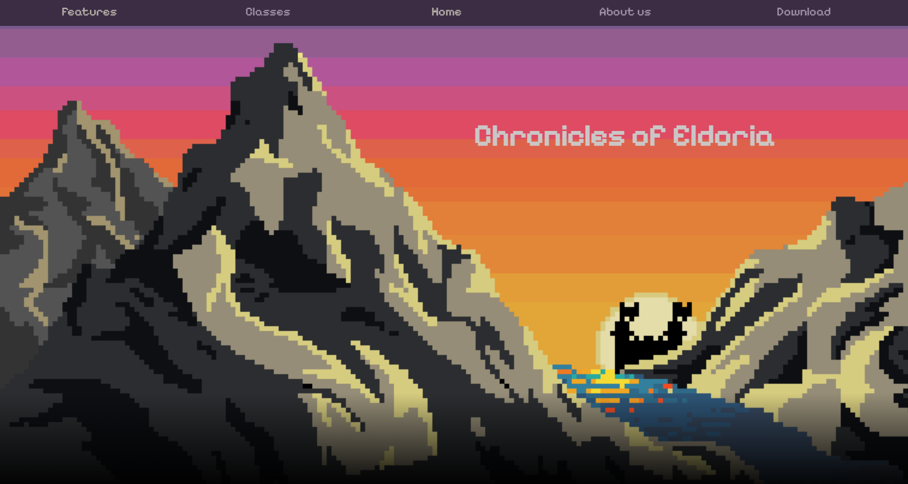
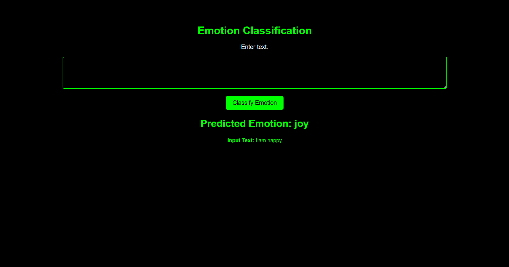
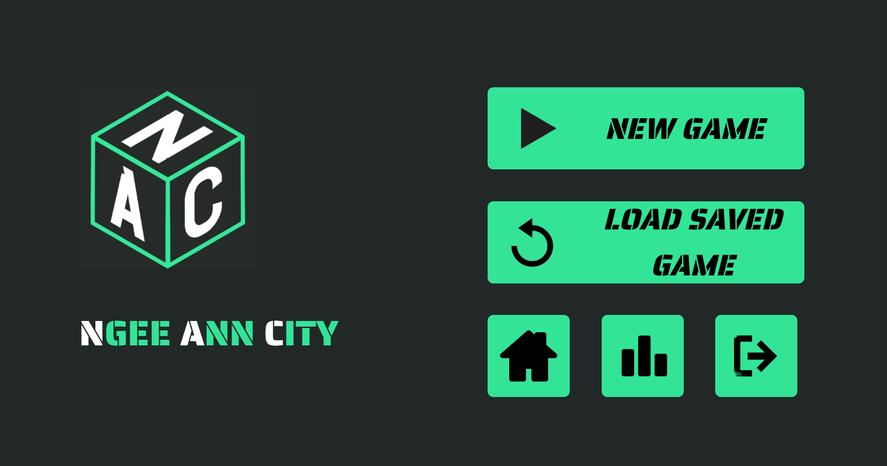
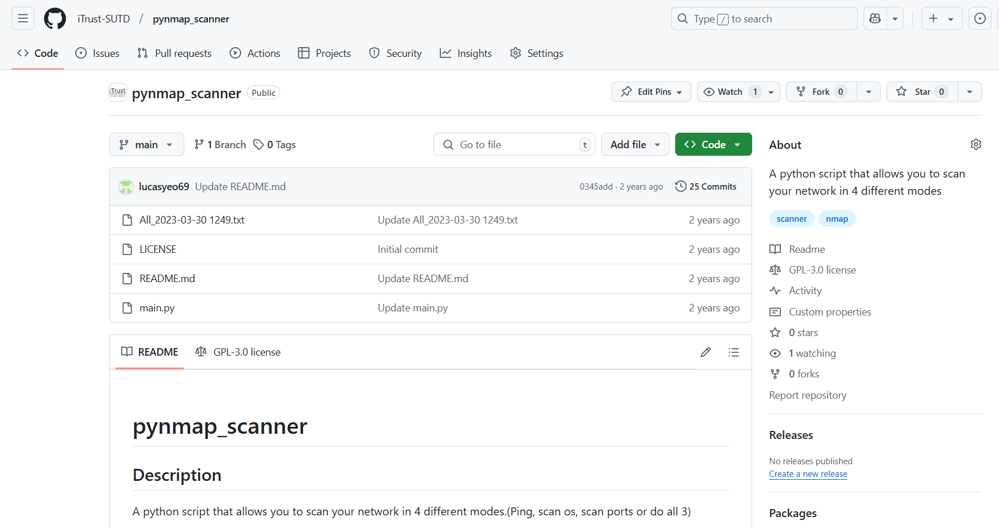

Explore new worlds through strategic card choices.

Developed an engaging game where players draw cards to explore three distinct worlds: a lush grassland, an ancient cave, and a dark netherworld. Conquer bosses using magical abilities and strategic combat.
A website to immerse players in the fantasy world of Eldoria.

A promotional website for the fictional game Kingdoms of Eldoria, featuring interactive elements like a hamburger menu and image sliders to enhance user experience and provide information about the game.
Classifying emotions in text with cutting-edge neural network models.

Developed an RNN-based emotional classifier to analyze and categorize emotions in text, providing real-time sentiment analysis with high accuracy.
Design and manage your own city to maximize profit and prosperity.

A city-building strategy game where players manage resources, construct buildings, and maximize happiness and prosperity through smart city planning in Arcade and Free Play modes.
Enhance network security by identifying vulnerabilities in devices.

Developed a network scanning tool in collaboration with iTrust at SUTD, leveraging Python and Nmap to detect and assess security vulnerabilities in network devices.